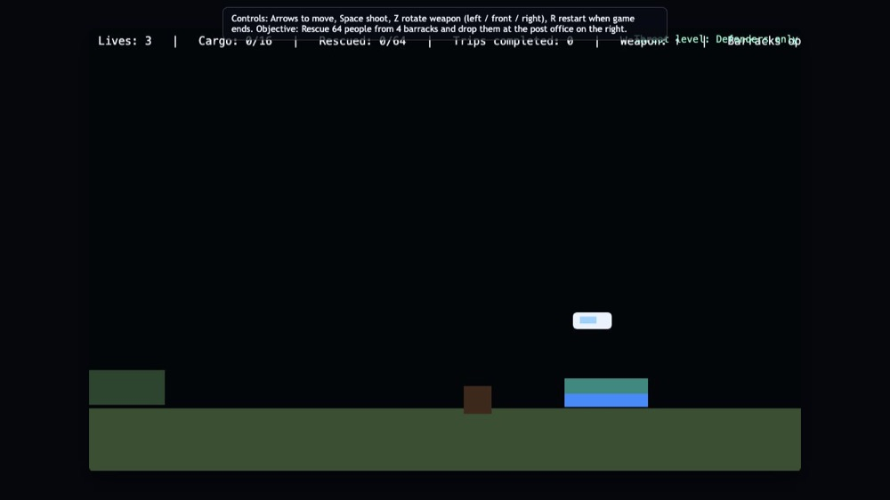
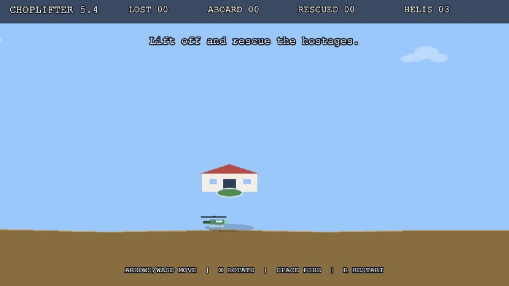
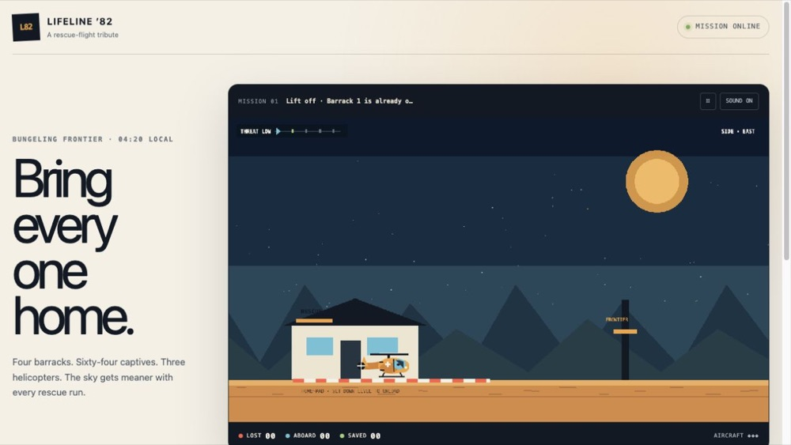
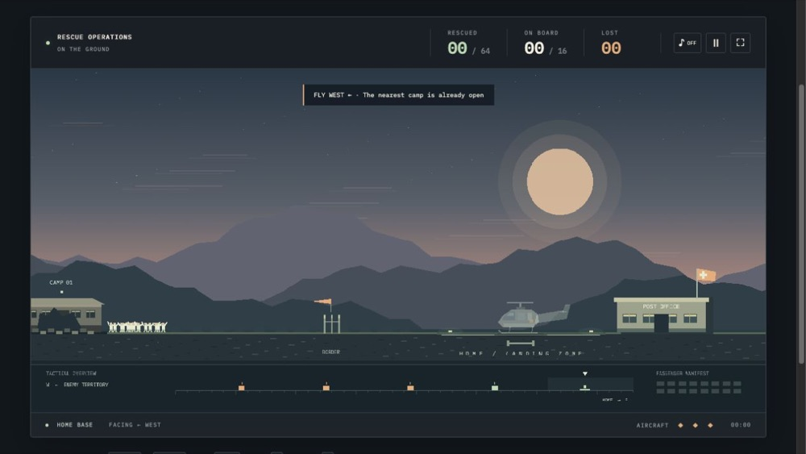
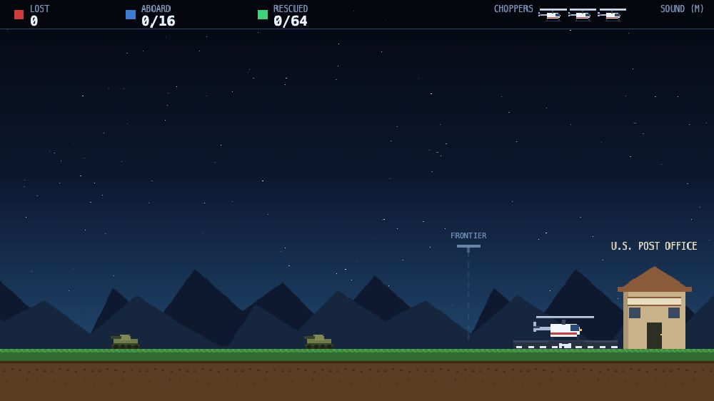
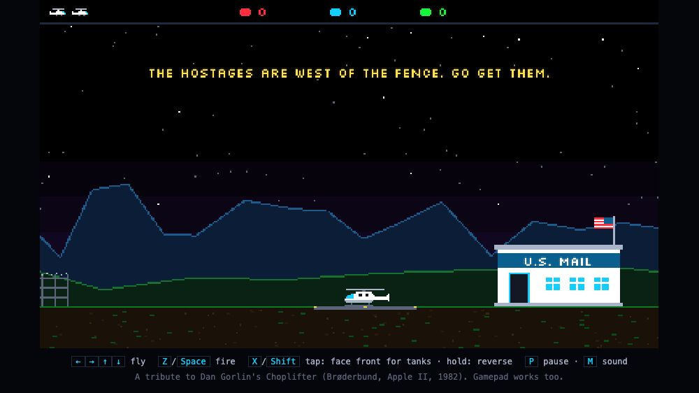
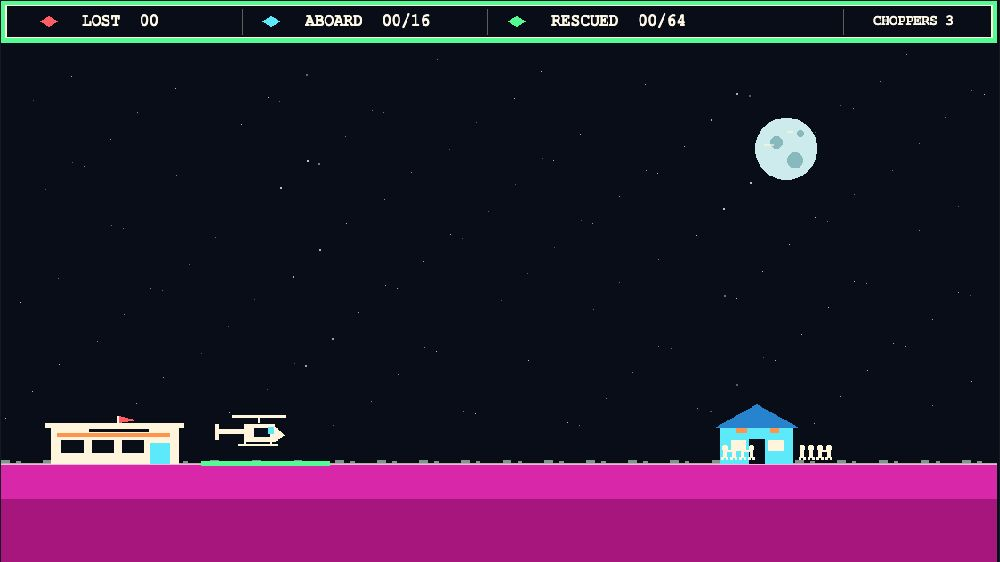

GPT-5.3 Codex
High thinking effort ·
A helicopter, people waiting on the ground, and the trip back to safety. Choplifter! was created by Dan Gorlin and published by Brøderbund for the Apple ][ in 1982. Easy to learn, hard to master. It’s a game I have an emotional connection to. One of my childhood games.
Since GPT-5.3 launched with impressive one-shot demos, I’ve been giving new models the same task: one-shot a playable web clone. The same prompt, the same reference video, a different model. This is where that experiment stands on September 26, 2026.

High thinking effort ·

High thinking effort ·

Extra-high thinking effort ·

Extra-high thinking effort ·

High thinking effort ·

Extra thinking effort ·

A personal collection, not a controlled benchmark or a complete history of model releases. Tools, runtimes, effort settings, and access can differ between attempts. These are the versions collected here as of September 26; building this page did not change the games.
create a playable clone of the broderbund game choplifter from 1982 watch a full gameplay video like https://www.youtube.com/watch?v=2KDxRSeDKy8 and do research online on the game mechanics and build a web-based version of the game using a modern web game framework
Preserved as written. The prompt is deliberately vague: I wanted a real-world test of what each model could make from a simple request.
The original. Choplifter! (1982), created by Dan Gorlin and originally published by Brøderbund for the Apple II, styled here as Apple ][. See the original manual and game history.
The video. Apple II Longplay - Choplifter, by hirudov, is the gameplay reference linked in the prompt. Credit for the recording belongs to its creator; the game footage depicts the original rights holders’ work. The video is linked, not rehosted.
Rights & affiliation. This is an independent, noncommercial experiment and tribute. It is not an official Choplifter release and is not affiliated with or endorsed by Dan Gorlin, Brøderbund, Apple, OpenAI, the video creator, or the game’s current rights holders. Game names, trademarks, and original code, artwork, music, and footage remain the property of their respective owners. No ownership of those materials is claimed, and this repository grants no rights to them.
As they are. These experimental games may contain bugs or depart from the original. They are provided as-is, without a warranty of accuracy, fitness, or non-infringement.